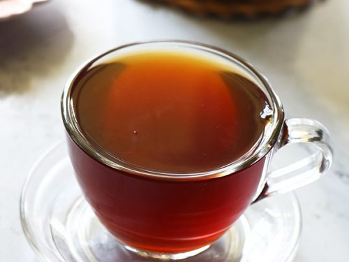
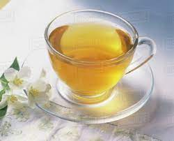
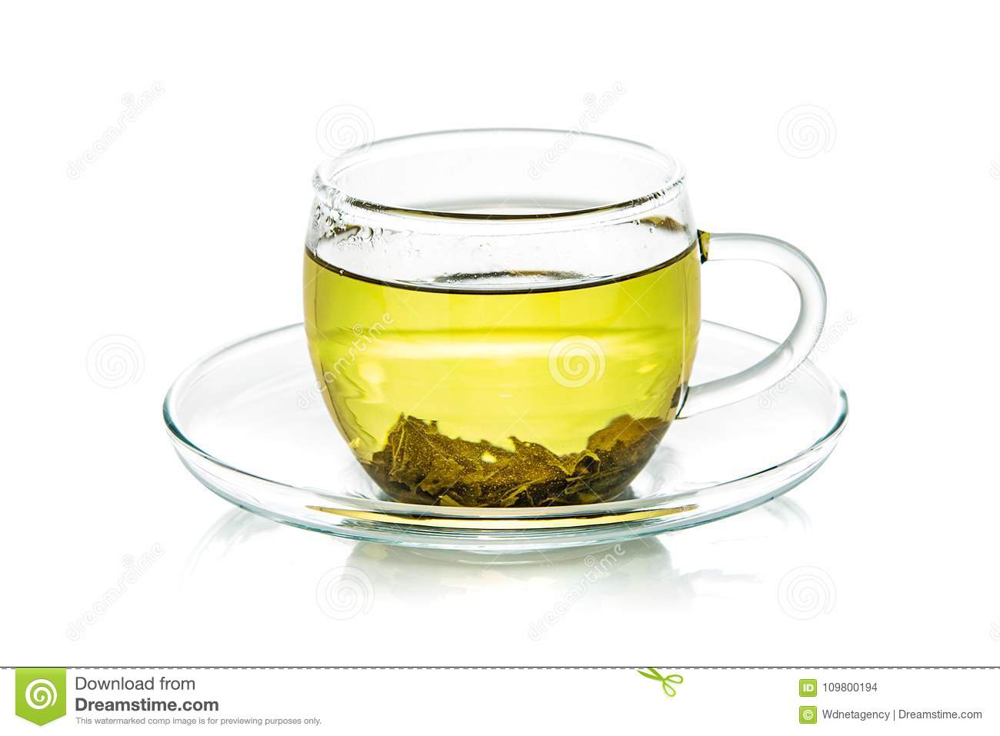

Nuwara Eliya is the best known tea-growing district of Sri Lanka with her impressive lush green tea plantations. When you visit Sri Lanka, you can’t miss exploring its incredible tea plantations and learn about tea production. So when you’re in Nuwara Eliya, then you should definitely explore the Nuwara Eliya tea plantations.The famous Sri Lankan Ceylon tea is, as we may believe by the experts, the finest tea in the world. If you plan to visit Nuwara Eliya, you have to visit one of the tea factories.But besides the impressive lush tea plantations.
In Kandy tea plantation there is place called Kadugannawa Tea Estate. It is about 20km west of Kandy. It’s a great factory to visit because the lady giving the tours speaks great English and is very detailed in her explanation. You will get the full explanation about black and green tea production from picking the leaves to the final product.The tours are relatively quick which is good for the kids and are also free, with tea tasting at the end and a boutique with beautifully packaged tea gift sets.
In Ella tea plantation there is place called Halpewatte Tea Factory If you want to visit a tea factory in Ella, Halpewatte is a good option. It’s the largest tea factory in the Uva region and only about 3km out of Ella on the road north.It seems it is mostly not operational on Mondays. Tours last between 45 mins – 1 hour with tea tasting at the end and a shop for gifts and souvenirs.
In Haputale tea plantation there is place called the Dambatenne Tea Factory.It was built by Thomas Lipton in 1890 when he began his tea empire, and this is the factory that manufactures his famous Lipton Ceylonta black tea. Lipton made the tea industry what it is today; with workers harvesting the tea, he sold his tea all around the world, quickly making Lipton a household name.From Lipton’s Seat, Dambatenne Tea Factory is just a short way off, and you can either get there by tuk-tuk or by following a trail through the tea plantation.

| NO. | Image of the Tea | Name of the Tea | Name of the Plantation | Exported |
|---|---|---|---|---|
| 1 |  | Black Tea | Nuwar Eliya | China |
| 2 |  | jasmine Tea | Kandy | China |
| 3 |  | Green Tea | Ella | Iraq |
| 4 | White Tea | Haputale | Russia |